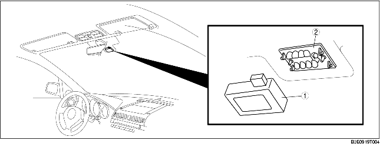

AUTO LIGHT SENSOR OPERATION
B3E091801052T17
• Installed on the underside of the rearview mirror (windshield center) and integrated with the rain sensor as a single unit.

.
|
1
|
Lens sensor
|
|
2
|
Auto-light sensor
|
• The upward and forward illumination level sensors which detect the level of illumination above and in front of the vehicle respectively are built-in.
Function Description
Illumination level adjustment function
-
• The illumination level sensitivity can be switched between two levels using the WDS or equivalent.
On-board diagnostic function
-
• If the voltage input to the auto-light sensor is not within the operational voltage (approx. 9-16 V), the PJB is informed of the malfunction and a PJB DTC is detected.